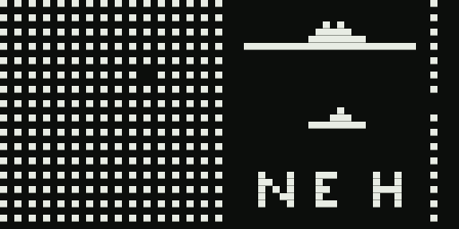
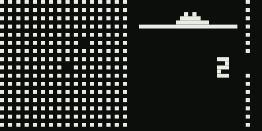

Depth Charge
P. E. Marston · DREAMER no. 7 (1981-03) p. 10 1K RAM



Find a hidden submarine in a 16x16x16 grid with only four depth charges. After each guess a sonar report tells you the direction of the error in compass and depth terms (for example south, east and too high). Miss four times and the sub is revealed and torpedoes you.
Keys
Three hex digits per guess: X, Y, depth.
Files
| File | Version | Load | Run |
|---|---|---|---|
| Depth Charge.c8 | main | 0200-037F | C000 |
Listing as transcribed (with notes): depth_charge.txt
Source
DREAMER no. 7 on archive.org, p. 10 (PDF page 12). Author: P. E. Marston.
Corrections applied
None.
Open doubts
None.